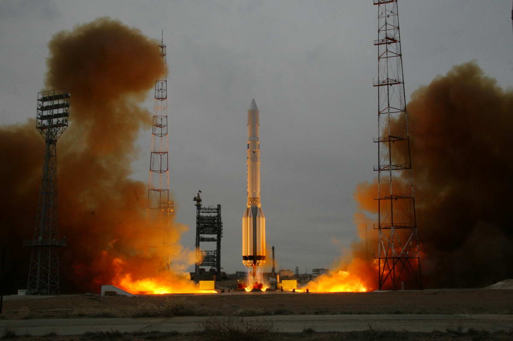

Добро пожаловать!
Среди выдающихся научно-технических достижений ХХ века освоение человеком космического пространства вошло в историю как событие эпохальное. Оно означает качественно новую ступень развития цивилизации – прорыв человечества в просторы Вселенной, открывающий перед ним захватывающие перспективы в сфере научных исследований, в экономике, в решении социальных проблем. Однако всему этому предшествовала долгая история рождения и развития идеи полета в космос.
Первые шаги научного познания Вселенной следует, вероятно, связывать с периодом систематических наблюдений движения небесных тел, начатых 3-4 тысячелетия назад. На основе этих наблюдений были установлены закономерности сезонных колебаний, крайне важные для земледелия и скотоводства, разработаны первые календари, составлены первые астрономические таблицы, пригодные для навигации.
О формировании материалистического представления о мире огромную роль сыграли труды таких астрономов, философов и мыслителей, как Гераклита Эфесского, Демокрита, Пифагора, Аристотеля, Аристарха Самосского, Клавдия Птолемея, Николая Коперника, Джордано Бруно, Галилео Галилея, Иоганна Кеплера и др. Но творческая мысль ученых не могла удовлетвориться наблюдением и описанием лишь характера движения планет во Вселенной. Идея полета в космос настойчиво пробивала себе дорогу. Для этих целей в описаниях фантастов уже присутствовали технические средства: воздушные шары, сверхмощные пушки и, наконец, ракетные двигатели и собственно ракеты. Не одно поколение молодых романтиков выросло на произведениях Ж. Верна, Г. Уэллса, А. Толстого, А. Казанцева, в основе которых было описание космических путешествий. Все изложенное фантастами будоражило умы ученых. Так, К.Э. Циолковский говорил: «Сначала неизбежно идут: мысль, фантазия, сказка, а за ними шествует точный расчет».
Можно считать, что отечественная ракетная техника берет начало с XVII века, когда в 1680 г. Петр I организовал первое в мире государственное предприятие по производству ракет для фейерверка – Московское ракетное заведение, после чего фейерверочное искусство в России достигло поразительного размаха. Особое место среди русских проектов применения реактивного принципа полета занимает проект Н.И. Кибальчича, известного русского революционера, оставившего несмотря на короткую жизнь (1853-1881), глубокий след в истории науки и техники. Имея обширные и глубокие знания по математике, физике и особенно химии, Кибальчич изготовлял самодельные снаряды и мины. Его «Проект воздухоплавательного прибора» был результатом длительной исследовательской работы над взрывчатыми веществами. Он, по существу, впервые предложил не ракетный двигатель, приспособленный к какому-либо летальному аппарату, как это делали другие изобретатели, а совершенно новый (ракетодинамический) аппарат, прообраз современных пилотируемых космических средств, у которых тяга ракетных двигателей служит для непосредственного создания подъемной силы, поддерживающей аппарат в полете. Летательный аппарат Кибальчича должен был функционировать по принципу ракеты. Свой проект Кибальчич завершил в тюрьме. А так как он был приговорен к смертной казни за покушение на царя Александра II, то его проект летательного аппарата был обнаружен только в 1917 году в архиве департамента полиции. К тому времени уже были созданы русские боевые ракеты К.И. Константинова и других изобретателей, что явилось вершиной европейской ракетной техники XIX века. Их развитие в 20-30-е годы ХХ века привело к созданию в нашей стране «катюш», сыгравших существенную роль в Великой Отечественной войне.
И тем не менее, извечная мечта человечества о полетах в космос так и оставалась уделом фантастов до тех пор, пока на рубеже XIX и XX веков не расцвел талант великого ученого К.Э. Циолковского, заложившего основы современной космонавтики. Разработав теорию реактивного движения, ряд принципиальных требований к созданию ракетной техники, к системам, обеспечивающим жизнедеятельность экипажа, К.Э. Циолковский гениально предвосхитил реальные пути, методы и стратегию освоения человеком космического пространства.
Продолжателями дела К.Э. Циолковскго стали С.П. Королев, Ф.А. Цандер, В.П. Вечинкин, Ю.А. Победоносцев, М.К. Тихонравов, Н.К. Федоренков, Б.И. Черановский, И.П. Фортиков. С их именами связано начало практических работ по космическим программам. Первым конкретным делом, сплотившим их в Группе изучения реактивного движения (ГИРД, создана в Москве в сентябре 1931 г.), стала работа по созданию самолета с жидкостным ракетным двигателем. В конце 1930-х годов ракеты начинают применяться для практических целей, сначала в боях на реке Халхин-Гол, а позже в Финляндии. В начале 1941 г. идет подготовка серийного производства боевых машин БМ-13-16 – многозарядных пусковых установок («катюш») с ракетными снарядами М-13. По завершении Великой Отечественной войны работы в данном направлении были продолжены. При этом изучался и проводился сравнительный анализ ракетной техники Германии. В частности, советские специалисты по крохам воспроизвели всю документацию и конструкцию трофейной ракеты «Фау-2», собрали более десятка этих ракет и провели в 1947 г. их летные испытания на специально созданном полигоне Капустин Яр. В мае 1946 года было принято постановление правительства о создании в стране современной ракетостроительной промышленности, главным конструктором РКТ был назначен С.П. Королев – начальник отдела ракет дальнего действия НИИ-88, «пионер» практического ракетостроения. Конструкторские коллективы смежных предприятий возглавили крупные специалисты в области ракетной техники: В.П. Глушко, Н.А. Пилюгин, М.С. Рязанский, В.И. Кузнецов, В.П. Бармин, А.М. Исаев, получившие опыт при изучении ракетной техники в Германии. Результатом работы стало создание баллистической ракеты Р-1, стратегических ракет Р5М, Р-12. 4 октября 1957 г. рев реактивных двигателей известил мир о запуске первого спутника в космос. Затем последовали второй, третий спутники, в том числе с животными. 1959 г. – стал годом изучения естественного спутника Земли. К Луне последовательно отправилось три космических аппарата, которым удалось не только сфотографировать ее обратную сторону, но и оставить свой след на ее поверхности. В феврале 1961 г. впервые космический аппарат отправился к Венере. И, наконец, 12 апреля 1961 г. в космос был запущен космический корабль «Восток», пилотируемый первым космонавтом планеты Ю.А. Гагариным.
Таким образом во второй половине ХХ в. человечество ступило на порог Вселенной – вышло в космическое пространство. И мы гордимся, что дорогу в космос открыла именно наша Родина.